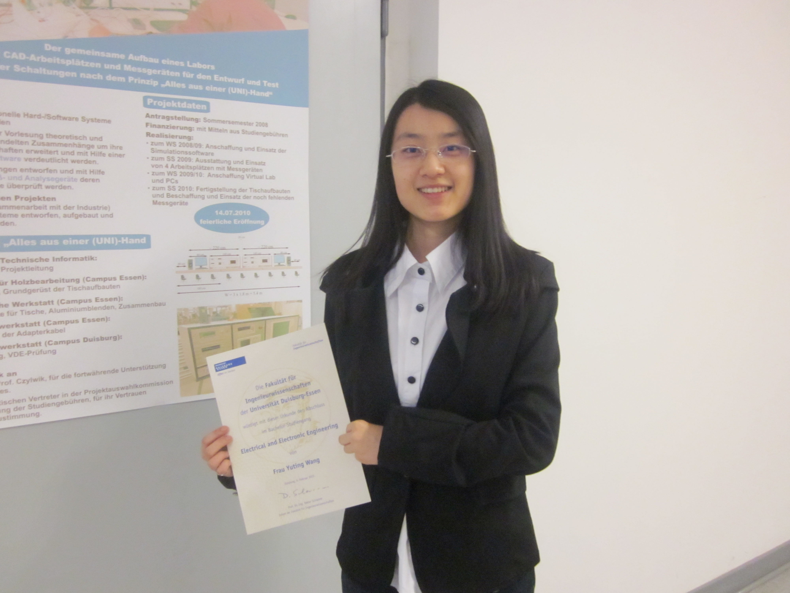

|  |
I am a Master's student in Informatics (Computer Science) at Karlsruhe Institute of Technology (KIT), Germany. I am currently working on my Master's thesis at Carnegie Mellon University, Language Technologies Institute. My advisor is Prof. Alexander Waibel and Prof. Florian Metze. My research interests are broadly in the area of cognitive system, speech recognition, computer vision, human-computer interaction, machine learning, data mining, deep learning and robotics. I completed my Bachelor's degree with summa cum laude in Electrical and Electronic Engineering at University of Duisburg-Essen, Germany. I was advised by University Prof. Klaus Solbach, working on LO signal generation circuit for power amplitude in a 7 Tesla MRI system. |
<